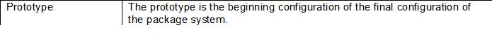
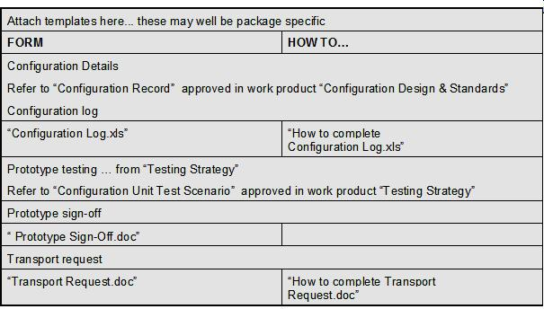
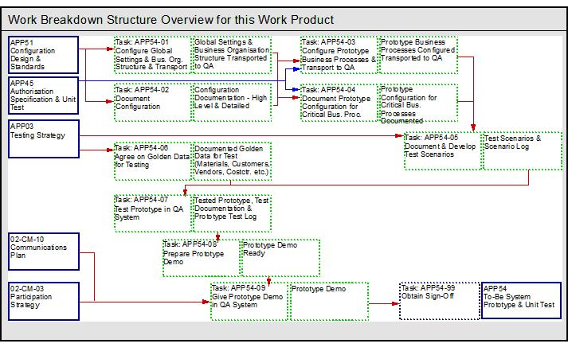

Introduction
The Baseline System technique paper refers to a certain level of configuration that has been formally reviewed and
agreed upon. The baseline serves as a development platform as a basis for further configuration and business
process development.
-
Document who performed the configuration
-
History of and reasons for change
-
Scenarios required to test configuration
-
Check that system meets the business requirements
Purpose
The purpose of this technique paper is to demonstrate that the new system will be able to support the Client's major
business processes and to highlight any potential problem areas. It will:
-
Ensure that the organization accepts the system and allows configuration to continue.
-
Ensure that the project expectations can be met.
-
Verify business support in mission critical areas.
-
Match the package's organizational structure to the Client's organizational structure.
-
Validate interface architecture and design on paper.
-
Obtain understanding and acceptance from the management of the future information system.
1.1 Impact of Not Having This Technique Paper
Without the Baseline, the Client will have no re-assurance that the system will be able to cover the business
processes, before cut-over. Not having this technique would therefore present too much of a risk to the success
of the project
The baseline offers the Client the opportunity to review how the critical business process will be conducted in the new
system - within the standard package, i.e., not actually across interfaces. This is an opportunity to identify
any remaining minor Gaps, or to make suggestions on how the process could be different.
1.2 Reasons for Not Needing This Technique Paper
Some Client’s may not want a formal baseline, however, some form of internal project validation that the needs of the
customers business are being met should take place prior to actual cut-over.
Notation

Steps
Input to this technique:
-
Global settings.
-
Business Organization Structure.
-
Detailed Configuration Standards and Customizing Rules delivered from the "Configuration Design & Standards"
work product.
-
Business Transaction flows level 1-4 from the "Detailed Gap Analysis" work product.
-
Approved Business Transaction scripts ("Future Process Design Documentation") and "Solution Design Matrix."
-
The "Critical Business Processes" list documented in "High Level Implementation Strategy" white paper and passed
through the "Detailed Gap Analysis" work product.
-
Documentation of the Client's Future organization, including company codes, plants, purchasing and sales
organization and the other organizational elements.
-
The approved "Configuration Unit Test Scenario" delivered from the "Testing Strategy" work product.
Output from this technique:
-
The approved "Configuration Unit Test Scenarios
-
The approved "Unit Tested Prototype”
-
The "Test Scenario Log"
-
The "Golden Data" spreadsheet
-
The "Prototype Test Log"
-
The approved "Prototype Sign-Off"
-
The configuration details documentation
-
The "Configuration Log"


The following tasks are performed:
-
Configure the Global Settings and the Business Organization Structure as documented in "Configuration Design &
Standards" and transport the configuration to the QA system.
-
Document the configuration in the detailed configuration documentation, e.g., the IMG for SAP or in the
configuration document. Update the configuration log.
-
Configure the Prototype Business Processes, i.e., the selected critical business processes documented in the "High
Level Implementation Strategy" white paper. Transport the configured ‘logical segments’ to the QA system for
prototype testing, once the informal testing has been done in the Development system.
-
Document the configuration for the Prototype Business Processes in the detailed configuration details
documentation, e.g., the IMG in SAP or in the configuration document. Update the configuration log.
-
Document and develop the test scenarios for the prototype. Update the scenario log.
-
Agree on golden master data for testing.
-
Test the configuration according to the developed scenarios, document any errors in the test documents and resolve
these, re-test by repeating the tests, tracking the progress in the test document, and logging the status
information in the "Test Scenario Log."
-
Prepare the Prototype Demonstration.
-
Give the Prototype Demonstration in the QA system.
-
Obtain sign-off and transport prototype configuration.
WBS Summary Tasks:
-
Configure global settings and business organization structure and transport to QA
-
Document configuration
-
Configure prototype business processes & transport to QA
-
Document prototype configuration for critical business processes
-
Document and develop test scenarios
-
Agree on Golden Data for testing
-
Test prototype in QA system
-
Prepare prototype demonstration
-
Give prototype demonstration in QA system
-
Obtain agreement on prototype system
-
Forward the "Test scenario" and the successful Prototype Configuration to "Final Configured System & Test"
Validation and Verification
Present a demonstration of the prototype to the project management, the steering committee, and the business community
/ user representatives. Obtain sign-off from the project management, the steering committee and the reference
group.
Advice and Guidance
It is important that the customer understands the definition of a Baseline - the prototype is not a throwaway
configuration, but is the first step towards building the complete system. The term 'prototype' is sometimes
confused with the definition of a 'proof of concept' or 'conference room pilot'.
The Baseline should encompass approximately 75% - 85% of the critical business processes.
The detailed configuration documentation and the test scenarios should be used as input to "Final configured system
& Test". The test scenarios should also be used as input to develop the "Integration Test Scenarios" and the
End User training material.
References
The "Detailed Configuration Standards & Rules” must be referenced during the configuration.
The "Testing Strategy" must be referenced during the development of the scenarios and the performance of the prototype
test.
The "Data Migration/Load Plan" should be referenced when extracting the relevant master data from the Legacy system to
use it for unit testing.
Refer to the following, if more information is required:
-
Detailed Gap Analysis.
-
02-OD-06: Future Organizational Design.
|